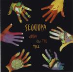

Home Artist links

| Artist: | Sequoya |
| Title: | Julia On The Tree |
| Label: | self produced |
| Length(s): | 27 minutes |
| Year(s) of release: | 2000 |
| Month of review: | 07/2000 |
Line up
Ines Caffier - flute, vocals
Tim Meier-Boeke - drums
Steffen Schuerkens - vocals, percussion, acoustic guitar
Willbald Spatz - bass
Wulf-Henning Steffen - keyboards
Stephan Vidi - acoustic and electric guitar, vocals
Tracks
| 1) | Carousel | 4.45
|
| 2) | Dance Of Colors | 5.26
|
| 3) | Wait | 7.29
|
| 4) | Locating God | 9.15
|
Summary
A band formed from the ashes of three German bands, Faun, Leonardo's Bike and
Die Anderen Zwei. This mini CD costs $9 and can be obtained through the website.
The music
Carousel is a waltz opening with flute and acoustic guitar. The music has
the friendliness of folk music with playful guitar and rather unobtrusive
vocals. The flute playing is more reminiscent of bands from Italy than of
for instance Jehtro Tull, the music is too friendly and light for this. In the
middle the music works up to a crescendo with rather loud guitars, but this is
only for a moment (later recurring). In a way it seems this band is between
Mostly Autumn and Sinkadus, taking the folk and the poppy chorus from the former
and the subdued melodic folk from the latter.
Dance Of Colours opens with piano and sharp guitar playing. A different dance this
time, a bit more temparement, but still playful. The double vocals are more spoken
than sung, until we get to the guitar dominated chorus. The rhythm guitars stays
in the next verse, giving the music a totally different mood. Then the flute comes
back in for a quick instrumental intermezzo in a strongly classical style.
Before I forget: the vocals. Although most of it is sung in a rather flat voice,
the singer does sometimes open his mouth a bit further for some more intense
singing and the harmony singing is quite good. The singer does have an accent.
The ending of the track is quite complex with guitar and flute intertwined.
The length of the tracks is increasing as we progress on this record. Seven and a
half minutes is Wait which opens friendly with acoustic guitar and harmony
vocals (three of them; the sound is rather "live", but they do sing it well).
Then the song moves to the rock side with quite heavy guitar playing and Tullian
flute playing. Actually this track I like a lot less than the previous two. The
vocal lines for instance are not that great, especially the chorus is rather weak
and some of the turns in the music seem a bit unnatural. The lyrics also do not fit
as well to the music as they could have. It seems the content of the lyrics goes
for the "fitness". Closer of this mini album is Locating God. The flute opening
reminds me somewhat of Philip Glass, but then the guitar sets in.
Then the song changes to be more in the style of the preceding with its combination
of classical piano, folky flute playing and progmetal guitars. Sometimes the
music has trouble going anywhere.
Conclusion
A mini album that started fine, but in the longer tracks it seems the band has
the potential to be interesting, but the compositions are as yet not strong enough.
Also the lyrics seem to be written in those tracks, not to fit well with the music,
but as something added and this makes some passages sound unnatural to me. The
style of the band is hard to pinpoint, because they easily combine progmetal with
folk and classical stylings. For this alone this band has my interest, but also for
some really good melodies and in the case of the first two tracks, good songs.
© Jurriaan Hage